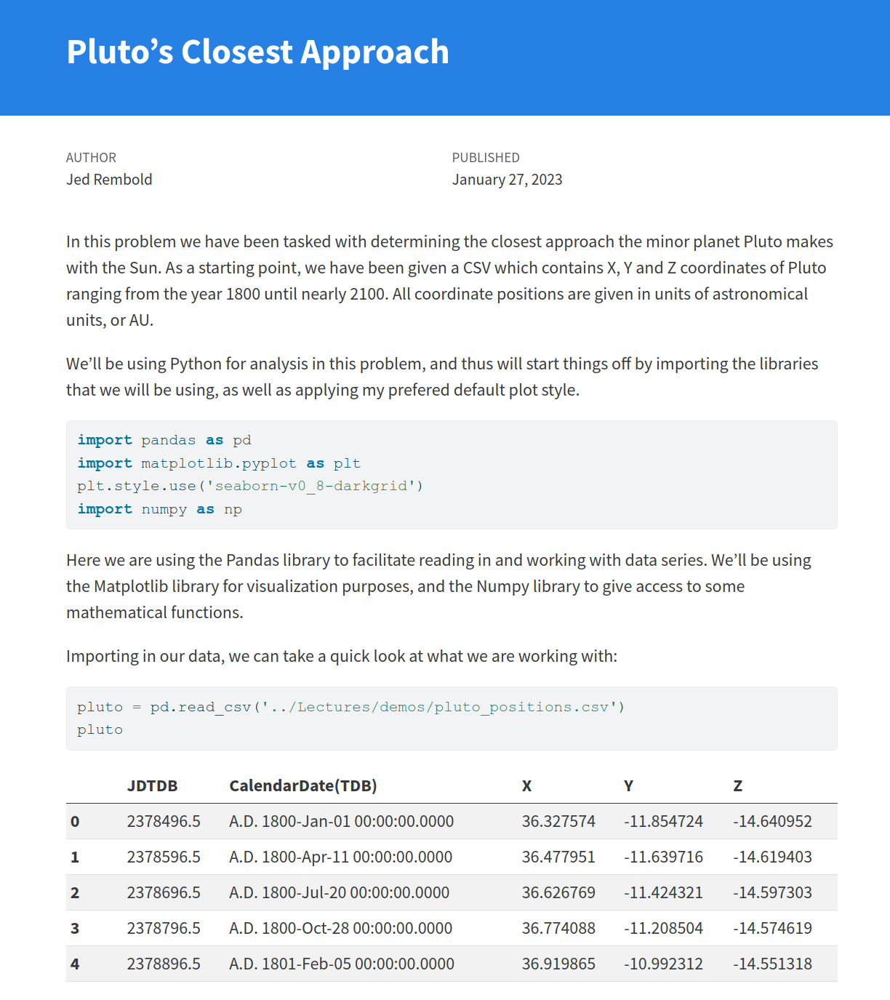

Jed Rembold
January 16, 2025

You are always free to follow your own strategies, for what you think will work best for you and your partner. The following are just some strategies that I have observed led to students being more successful.
Below are the partner assignments for HW1. Rearrange yourself in the room to find your partner and prepare to answer the questions on the following slide.